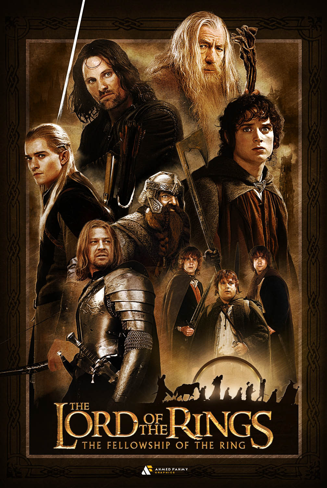

MOVIE NAME : Lord of the Rings: The Fellowship of the Ring

Release date :
19 December 2001 (United States)
Directed by :
Peter Jackson
Main characters :
Elijah Wood
Ian McKellen
Liv Tyler
Viggo Mortensen
Sean Astin
Cate Blanchett
John Rhys-Davies
Billy Boyd
Dominic Monaghan
Orlando Bloom
Christopher Lee
Hugo Weaving
Sean Bean
Ian Holm
Andy Serkis
The Lord of the Rings: The Fellowship of the Ring is a 2001 epic high fantasy adventure film directed by
Peter Jackson from a screenplay by Fran Walsh, Philippa Boyens, and Jackson, based on 1954's *The Fellowship
of the Ring*, the first volume of the novel *The Lord of the Rings* by J. R. R. Tolkien. The film is the
first installment in *The Lord of the Rings* trilogy. It features an ensemble cast including Elijah Wood,
Ian McKellen, Liv Tyler, Viggo Mortensen, Sean Astin, Cate Blanchett, John Rhys-Davies, Billy Boyd, Dominic
Monaghan, Orlando Bloom, Christopher Lee, Hugo Weaving, Sean Bean, Ian Holm, and Andy Serkis.
Set in Middle-earth, the story tells of the Dark Lord Sauron, who seeks the One Ring, which contains part of
his might, to return to power. The Ring has found its way to the young hobbit Frodo Baggins. The fate of
Middle-earth hangs in the balance as Frodo and eight companions (who form the Company of the Ring) begin
their perilous journey to Mount Doom in the land of Mordor, the only place where the Ring can be destroyed.
The Fellowship of the Ring was filmed and edited entirely in New Zealand and premiered on 10 December 2001.
It was released in the U.S. on 19 December and acclaimed as a landmark fantasy film. It earned over $868
million worldwide in its original run and received 13 Academy Award nominations, winning 4 including Best
Visual Effects and Best Original Score.